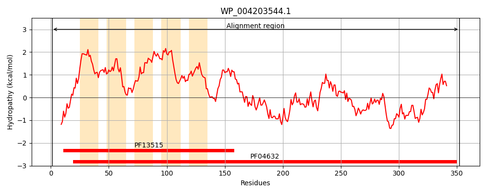
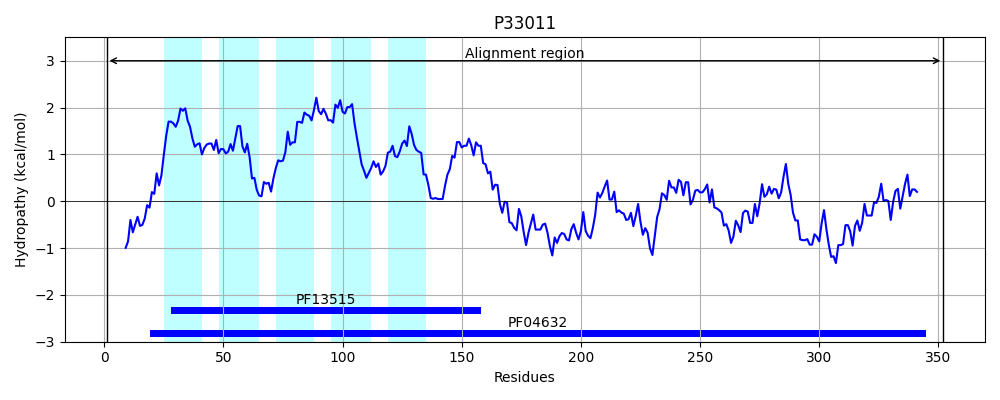
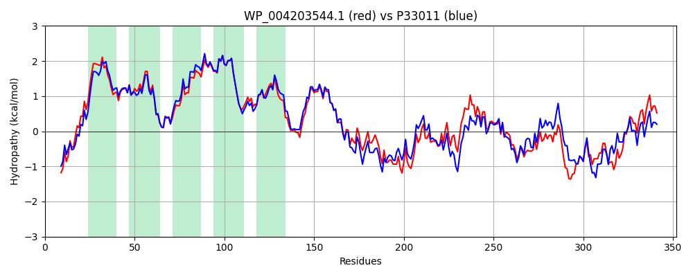

Hit Accession: P33011
Hit TCID: 2.A.85.7.1
Hit Description: gnl|BL_ORD_ID|9883 gnl|TC-DB|P33011|2.A.85.7.1 Inner membrane protein yeeA OS=Escherichia coli (strain K12) GN=yeeA PE=1 SV=2
Mach Len: 352
e:0.000000
Query TMS Count : 5
Hit TMS Count: 5
TMS-Overlap Score: 4.350000
Predicted Substrates:CHEBI:5199;Fusaric acid
BLAST Alignment:
Score: 1448 , Bit scores: 562 bits, E-value: 0.0e+00, Alignment length: 352, Percentage identity: 75
Query: 1 MRADKSLKPFEIRLYRHYRVVHGVRIALAFVLTFLLVRLLNVPEGTWPLITLVVVMGPISFWGNVVPRAFQRIGGTILGSALGLVALKLELISLPLMVLWCAAAMFLCGWLALGKKPYQALLIGITLSVVVGAPPGDMHTALWRSGDVIFGSLLAMLFTGIWPQRAFIHWRIQMASYVTNFNRLYQAGFSPNLVDRPRLEKHLQQALNDVVKMRGLITPASKETHIQKAIFEAIQTVSRNLVCMLELQINAWWATRPGHFVMLNAHTLRETQQMTQQTLLAIAHALYEGNPQPVRANNEKLNEIVLELRQLMKEQGDDSLAETPIHGYVWLSIELARQLELLSHLICRALRK 352
MRADKSL PFEIR+YRHYR+VHG R+ALAF+LTFL++RL +PE TWPL+T+VV+MGPISFWGNVVPRAF+RIGGT+LGS LGL+AL+LELISLPLM++WCAAAMFLCGWLALGKKPYQ LLIG+TL++VVG+P G++ TALWRSGDVI GSLLAMLFTGIWPQRAFIHWRIQ+A +T +NR+YQ+ FSPNL++RPRLE HLQ+ L D VKMRGLI PASKET I K+I+E IQT++RNLVCMLELQINA+WATRP HFV+LNA LR+TQ M QQ LL++ HALYEGNPQPV AN EKLN+ V ELRQL+ D + ETPI+GYVWL++E A QLELLS+LICRALRK
Sbjct: 1 MRADKSLSPFEIRVYRHYRIVHGTRVALAFLLTFLIIRLFTIPESTWPLVTMVVIMGPISFWGNVVPRAFERIGGTVLGSILGLIALQLELISLPLMLVWCAAAMFLCGWLALGKKPYQGLLIGVTLAIVVGSPTGEIDTALWRSGDVILGSLLAMLFTGIWPQRAFIHWRIQLAKSLTEYNRVYQSAFSPNLLERPRLESHLQKLLTDAVKMRGLIAPASKETRIPKSIYEGIQTINRNLVCMLELQINAYWATRPSHFVLLNAQKLRDTQHMMQQILLSLVHALYEGNPQPVFANTEKLNDAVEELRQLLNNHHDLKVVETPIYGYVWLNMETAHQLELLSNLICRALRK 352 | Protein Hydropathy Plots: |
|---|
|  |  |
Pairwise Alignment-Hydropathy Plot:
|
|---|
|  |